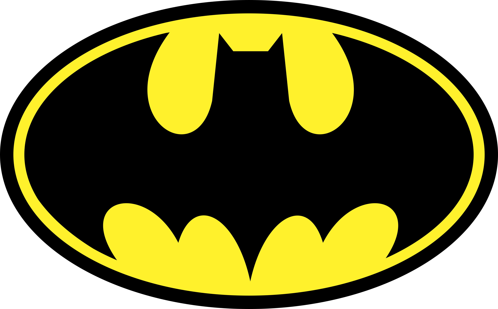

Sabryna Esmeraldo; jornalista há mais de dez anos, mestre em Comunicação, Arte e Cultura.

Sua história teve início após testemunhar o assassinato de seus pais ainda quando criança, o que o fez jurar vingança contra os criminosos e treinar todos os dias sozinho, além de criar um personagem baseado em um morcego para combater o crime. Foi aí que surgiu Batman, o super-herói da cidade de Gotham.
Intérprete: Adam West;
Vilões: Coringa, Pinguim, Charada e Mulher-Gato;
Elenco: Adam West, Burt Ward, Cesar Romero, Lee Meriwether, Burgess Meredith, Frank Gorshin;
Diretor: Leslie H. Martinson.
Em 1966, chegava aos cinemas o primeiro filme do Batman. Adam West e Burt Ward imortalizaram suas atuações no papéis do Homem-Morcego e do Robin, respectivamente. Outro grande destaque ficou para o trabalho de Cesar Romero, como um dos Coringas que entrariam para a história do cinema.
A trama do longa acompanha a dupla de heróis tentando salvar o Comodoro Schmidlapp, que corre perigo a bordo de um iate. Eles chegam ao barco usando o Batcóptero, mas descobrem que tudo não passou de uma emboscada arquitetada por quatro dos principais inimigos do Batman.
Intérprete: Michael Keaton;
Vilões: Coringa;
Elenco: Michael Keaton, Jack Nicholson, Kim Basinger, Robert Wuhl, Pat Hingle, Billy Dee Williams, Michael Gough e Jack Palance;
Diretor: Tim Burton.
Apenas 23 anos depois de seu primeiro filme, o Homem-Morcego retornaria aos cinemas. Primeira produção que pertenceu a um universo cinematográfico, Batman contou com a marcante direção de Tim Burton e trouxe Michael Keaton no papel principal. Com Jack Nicholson fazendo história com sua interpretação do vilão Coringa, o longa mostrou a transformação do personagem no palhaço do crime.
Na trama, o Homem-Morcego precisa impedir o plano do Coringa de envenenar a população de Gotham com um gás que causa risadas histéricas e leva à morte. Mas o vilão guarda ainda outro segredo, que tem relação direta com o herói.
Além de se tornar um sucesso de bilheteria e crítica e de ganhar um Oscar, Batman foi uma grande influência nas técnicas de desenvolvimento de futuros filmes do gênero.

Intérprete: Michael Keaton;
Vilões: Pinguim, Mulher Gato;
Elenco: Michael Keaton, Danny DeVito, Michelle Pfeiffer, Christopher Walken;
Diretor: Tim Burton.
Contando mais uma vez com Michael Keaton no papel principal e Tim Burton na direção, Batman: O Retorno deu continuidade à história que vimos no longa anterior, mas dessa vez Bruce Wayne precisa enfrentar o perigoso Pinguim. O vilão ganhou vida mais uma vez nos cinemas, dessa vez na interpretação de Danny Devito.
Mas o macabro plano do Pinguim de sequestrar e matar os filhos primogênitos dos cidadãos de Gotham não é o único desafio do Homem-Morcego neste filme. Ele ainda precisa tentar impedir a sede de vingança da Mulher-Gato, vivida por Michelle Pfeiffer.
Embora o tom sombrio que Burton trouxe ao filme tenha sido criticado na época, Batman: O Retorno se tornou uma referência para outros profissionais da área, e foi eleito pela Revista Empire como o 7º melhor filme de super heróis, e o 2º melhor longa do personagem, perdendo apenas para Batman O Cavaleiro das Trevas (2008).
Intérprete: Val Kilmer;
Vilões: Charada e Duas-Caras;
Elenco: Val Kilmer, Tommy Lee Jones, Jim Carrey, Nicole Kidman, Chris O'Donnell, Michael Gough e Pat Hingle;
Diretor: Joel Schumarcher.
Com a recusa de Michael Keaton e Tim Burton em voltarem para um terceiro filme do Batman, Joel Schumarcher assumiu a direção do novo longa, e Val Kilmer assumiu o papel principal, após muitos atores serem cogitados para o trabalho. O filme também contou com a apresentação de Dick Grayson, o Robin, vivido por Chris O'Donnell.
Com uma produção marcada por conflitos, o filme dividiu opiniões, e o protagonista mudaria mais uma vez no filme a seguir. A trama deste, contudo, trouxe os icônicos vilões Duas-Caras e Charada, que planejavam drenar informações dos cérebros dos cidadãos de Gotham.
Intérprete: George Clooney;
Vilões: Senhor Frio, Hera Venenosa e Bane;
Elenco: George Clooney, Arnold Schwarzenegger, Chris O'Donnell, Uma Thurman e Alicia Silverstone;
Diretor: Joel Schumacher.
Quarto e último filme da antologia The Batman Motion Picture, Batman e Robin contou com o retorno de Chris O'Donnell para o papel de parceiro do Homem-Morcego, que agora ganhou vida na interpretação de George Cloney.
A trama acompanha Batman, Robin e a recém chegada Batgirl combatendo o Senhor Frio, a Hera Venenosa e Bane, que se uniram na tentativa de dominar Gotham.
Frequentemente ridicularizado pela trama, pelos figurinos e outros elementos, o filme teve críticas e bilheteria muito negativas. Além disso, foi indicado em 11 categorias no prêmio Framboesa de Ouro, incluindo a de Pior Filme. É considerado até hoje o pior filme do personagem, motivo pelo qual a Warner Bros. cancelou este projeto, e só retornaria a abordar o personagem nos cinemas em 2005.

Intérprete: Christian Bale;
Vilões: Espantalho;
Elenco: Christian Bale, Michael Caine, Liam Neeson, Katie Holmes, Gary Oldman, Cillian Murphy, Morgan Freeman;
Diretor: Christopher Nolan.
Dando início à franquia que elevaria os filmes do Batman a um nível até então nunca alcançado, Batman Begins trouxe Christian Bale brilhando no papel do Homem-Morcego. O longa reiniciou mais uma vez a história do personagem, mostrando novamente a infância de Bruce Wayne, o assassinato de seus pais, o treinamento ao qual foi submetido e seu recrutamento para a Liga das Sombras.
Ao retornar a Gotham, Wayne precisa encarar o vilão Espantalho, que usa como arma uma toxina que causa alucinações aterrorizantes em seus oponentes. Com uma abordagem mais política, indo além a motivação de dominação mundial, o primeiro filme da trilogia de Christopher Nolan trouxe um tom sombrio e uma trama mais realística que conquistou os fãs e a crítica.
Intérprete: Christian Bale;
Vilões: Coringa;
Elenco: Christian Bale, Michael Caine, Heath Ledger, Gary Oldman, Aaron Eckhart, Maggie Gyllenhaal,
Morgan Freeman;
Diretor: Christopher Nolan.
Considerado até hoje o melhor filme do Batman já produzido, O Cavaleiro das Trevas fez história ao receber 8 indicações ao Oscar, tendo vencido em duas: Melhor Edição de Som e Melhor Ator Coadjuvante. Este último foi o prêmio póstumo conquistado por Heath Ledger, por sua incrível interpretação do vilão Coringa.
Na trama, o Coringa assume o crime organizado de Gotham e representa um dos maiores desafios que Bruce Wayne já precisou enfrentar. Sádico e violento, ele conta diferentes histórias de origem para sua identidade criminosa, enquanto mutila os rostos de suas vítimas.
O longa ainda trouxe para as telonas o personagem Harvey Dent, mostrando sua transformação para se tornar o vilão Duas-Caras. Um novo traje para o Batman e o Batpod - uma recriação da Batmoto - também foram introduzidos no filme.

Intérprete: Christian Bale;
Vilões: Bane;
Elenco: Christian Bale, Michael Caine, Gary Oldman, Anne Hathaway, Tom Hardy, Marion Cotillard, Joseph Gordon-Levitt, Morgan Freeman;
Diretor: Christopher Nolan.
O terceiro e último filme da franquia de Christopher Nolan trouxe um salto temporal de 8 anos, período durante o qual Bruce Wayne se manteve recluso, após convencer o Comissário Gordon a culpar o Batman pela violência infligida a Harvey Dent.
Quando Bane, ex-membro da Liga das Sombras, chega a Gotham para pôr em prática o plano de Ras Al Ghul de destruir a cidade, o Batman já não tem o preparo físico de outrora. O filme ainda trouxe Anne Hathaway no papel de Selina Kyle, a Mulher-Gato.
O longa caiu nas graças dos fãs e dos críticos, que elogiaram direção, roteiro, trilha sonora e elenco da conclusão da trilogia do Cavaleiro das Trevas.
Intérprete: Ben Affleck;
Vilões: Lex Luthor;
Elenco: Ben Affleck, Henry Cavill, Amy Adams, Jesse Eisenberg, Diane Lane, Laurence Fishburne, Jeremy Irons, Gal Gadot, Holly Hunter;
Diretor: Zack Snyder.
Com sua trama se passando 18 meses após os acontecimentos do filme O Homem de Aço, Batman vs Superman: A Origem da Justiça foi a segunda produção do chamado Universo estendido DC, e abordou o mortal conflito entre o Morcego de Gotham e o Superman.
Manipulado por Lex Luthor, Bruce Wayne acaba vendo o Superman como uma ameaça à Terra, o que leva os personagens a um embate extremamente perigoso, com o Batman chegando a criar uma armadura movida a kriptonita.
Dirigido por Zack Snyder, o filme dividiu opiniões, recebendo pesadas críticas por seu tom escuro e seu ritmo lento e representando um grande desapontamento nas bilheterias mundiais.
Intérprete: Ben Affleck;
Vilões: Coringa, Magia;
Elenco: Margot Robbie, Viola Davis, Cara Delevingne, Will Smith, Jared Leto, Joel Kinnaman, Jai Courtney, Jay Hernandez, Adewale Akinnuoye-Agbaje, Ike Barinholtz, Scott Eastwood;
Diretor: David Ayer.
Embora o foco de Esquadrão Suicida não tenha sido no Batman, o longa se passa no mesmo universo e é protagonizado por alguns dos populares vilões das HQs do personagem e de outras séries da DC Comics. São eles Coringa, Arlequina, Pistoleiro, El Diablo, Capitão Bumerangue, Crocodilo, Amarra e Magia.
Embora o Coringa de Jared Leto tenha tido uma recepção mista, foi a primeira vez que um filme abordou o popular (e abusivo) relacionamento entre ele e Arlequina. Ela, por sua vez, caiu nas graças do público com a interpretação de Margot Robbie, e protagonizou o filme Aves de Rapina em 2020.
Ainda assim, o Bruce de Ben Affleck também marcou presença no filme, mais especificamente na cena mid-credits, quando Wayne aparece conversando com Amanda Waller e pegando os arquivos dos meta humanos de quem o governo tem registro.
Intérprete: Ben Affleck;
Vilões: Lobo da Estepe;
Elenco: Ben Affleck, Gal Gadot, Jason Momoa, Henry Cavill, Ray Fisher, Ezra Miller, Amy Adams, J.K. Simmons;
Diretor: Joss Whedon.
O filme que trouxe para os cinemas a aclamada Liga da Justiça acabou tendo sua produção envolta em polêmicas, com a principal delas sendo a troca de diretores, marcando a saída de Zack Snyder e a entrada de Joss Whedon (e o início de uma longa campanha para que a DC liberasse a versão de Snyder do filme).
A trama acompanhou o Batman e a Mulher-Maravilha reunindo a equipe de heróis, para enfrentar o temido Lobo da Estepe, que planejava usar as chamadas Caixas Mães para destruir a Terra. Em um período dois anos após a morte do Superman, Batman, Mulher-Maravilha, Flash, Aquaman e Ciborgue se unem para salvar o planeta.

Intérprete: Ben Affleck;
Vilões: Darkseid e Lobo da Estepe;
Elenco: Ben Affleck, Gal Gadot, Jason Momoa, Henry Cavill, Ray Fisher, Ezra Miller, Amy Adams, J.K. Simmons;
Diretor: Zack Snyder.
Após quatro anos de muita batalha dos fãs para que a DC e a Warner liberassem o chamado Snyder Cut, os estúdios anunciaram que a versão do diretor chegará ao streaming HBO Max em 2021, dividido em quatro partes de 1h aproximadamente cada.
Nessa versão, o fio condutor da trama não é o Batman e a Mulher-Maravilha, mas sim o Ciborgue. Embora também aborde as caixas maternas e o embate contra o Lobo da Estepe, o filme tem um espaço de destaque para o famoso vilão Darkseid, que lidera um exército que invade a Terra em busca das caixas. Para enfrentá-lo, a Liga da Justiça reuniria um exército de Amazonas, deuses, humanos, atlantes e um membro da Tropa dos Lanternas Verdes.
O Snyder Cut conta ainda com um momento muito esperado pelos fãs de Liga da Justiça: o Superman vestindo o uniforme preto. Por se passar exatamente no mesmo período de tempo que a trama da versão de Joss Whedom, este é o único filme que não deixaremos na ordem de lançamento.
Intérprete: Dante Pereira-Olson (jovem Bruce Wayne);
Vilões: Coringa;
Elenco: Joaquin Phoenix, Robert De Niro, Zazie Beetz, Bill Camp, Frances Conroy, Brett Cullen;
Diretor: Todd Phillips.
O filme solo do Coringa chegou aos cinemas fazendo história., Quebrando diversos recordes de bilheteria, o longa contou com a brilhante atuação de Joaquin Phoenix, trabalho pelo qual ele conquistou o Oscar de Melhor Ator.
A trama acompanha o desajustado Arthur Fleck, um homem simples e sofrido que trabalha como palhaço e sonha em se tornar um comediante. Com problemas neurológicos, é bem pouco sociável e toma remédios que consegue com o serviço de assistência social. Após ser humilhado, agredido e rebaixado de diferentes formas, Arthur vai se transformando naquele que conheceríamos como o Palhaço do Crime.
Embora o foco aqui não seja o Batman, o filme conta mais uma história de origem do arqui-inimigo do Homem Morcego, e ainda conta com a aparição de um Bruce Wayne bem jovem.
Intérprete: Robert Pattinson;
Vilões: Mulher-Gato, Charada, Pinguim, Carmine Falcone;
Elenco: Robert Pattinson, Jeffrey Wright, Zoë Kravitz, Paul Dano, Andy Serkis, Colin Farrell, John Turturro;
Diretor: Matt Reeves.
Depois de diferentes reclamações sobre a versão do Batman de Ben Affleck, o Homem-Morcego do diretor Matt Reeves - vivido por Robert Pattinson - foi aguardado com grande antecipação pelos fãs e não decepcionou. O filme conquistou incríveis 90% de aprovação dos críticos no site Rotten Tomatoes. A trama se passa no segundo ano do jovem Bruce como Batman e mostra melhor o lado detetive do morcego de Gotham.
O vilão Charada está por trás de uma série de assassinatos misteriosos e está provocando o Batman com seus enigmas. Na tentativa de investigar e impedir que os crimes continuem, Bruce ainda precisa lidar com outros vilões clássicos das HQs do personagem, como Mulher-Gato, Pinguim e Carmine Falcone.
Embora se passe anos antes da trama dos demais filmes desta lista, The Batman não terá relação direta com nenhuma das produções anteriores, fazendo parte dos novos filmes DC que não integram o DCEU.
Crédito do Conteúdo:
Sabryna Esmeraldo; jornalista há mais de dez anos, mestre em Comunicação, Arte e Cultura.
Landing Page (código):

Wagner Lima; professor de programação web e design, especialista em mecanismos de buscas (SEO), graduando em Mídias Digitais.